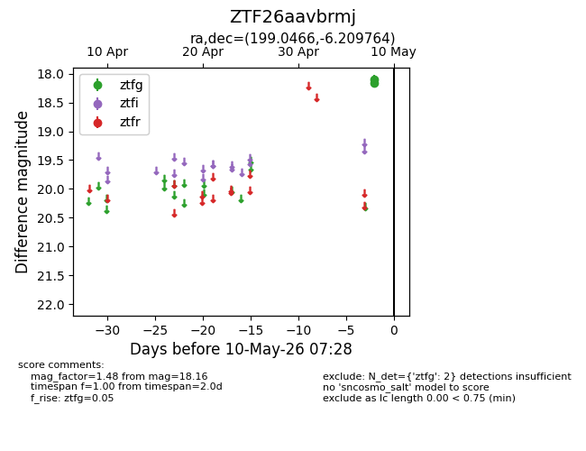
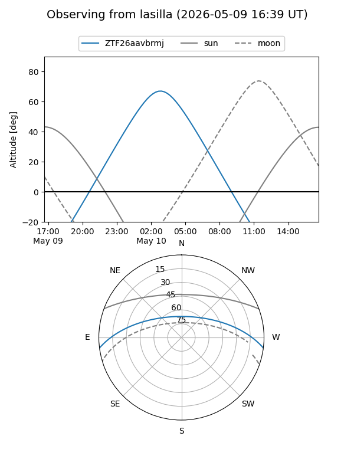
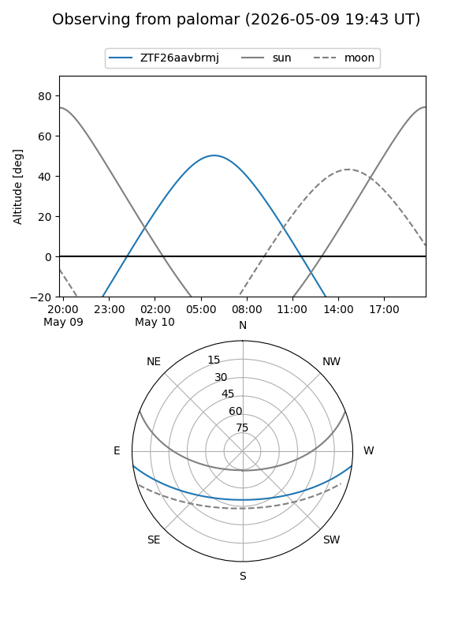

ZTF26aavbrmj
Target ZTF26aavbrmj at 2026-05-10 07:29
Aliases and brokers:
FINK: link
Lasair: link
ALeRCE: link
alt names
ZTF26aavbrmj (ztf,fink_ztf)
Coordinates:
equatorial (ra, dec) = 199.0466,-6.20976
equatorial (HMS+DMS) = 13:16:11.19,-06:12:35.15
galactic (l, b) = (314.0157,+56.12846)
Flags:
Photometry:
last ztfg=18.16
2 ztfg detections
Lightcurve

Visibility


Additional plots